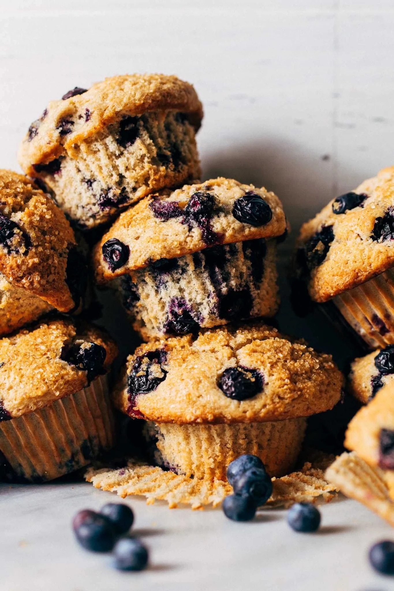

Blueberry Muffins

How to make blueberry muffins.
Muffins are probably one of the trickiest recipes for me to test. Mainly because I’m VERY picky about them! They have to bake tall with a moist consistency and tons of flavor, which is something difficult to achieve. Luckily, the process of making blueberry muffins is very easy! So while testing takes a while, once it’s nailed down its quick to whip up a batch. There are three main steps:
- Dry Ingredients – This includes the flour, salt, spices, leaveners, AND sugar! Truly anything that is dry. These are well combined in a large mixing bowl and then the blueberries are tossed in. By coating the blueberries in the dry mixture, the dry coating will prevent the berries from sinking to the bottom of the muffins.
- Wet Ingredients – All of the remaining ingredients are combined in a separate bowl. This is the butter, oil, eggs, extracts, milk, and sour cream. They may not FULLY blend together, but that’s ok. As long as it’s as smooth as possible.
- Combine – Pour the wet ingredients into the dry ingredients and mix to combine. It’s that easy!
This mixing method is used for most muffin recipes as well as quick breads, cornbread, pancakes, and waffles. The reason is because these batters tend to be rather thick. By limiting the dry and wet mixing to just one go, this reduces the chances of overworking the gluten strands. The end result is a super light and tender muffin!
Ingredients
- 2 1/2 cups (320g) all purpose flour
- 1 cup (200g) granulated sugar
- 1/4 cup (50g) light brown sugar
- 3 tsp baking powder
- 1 tsp cinnamon
- 1/4 tsp salt
- 2 cups (280g) fresh blueberries, plus more for sprinkling on top
- 21/4 cup (55g) unsalted butter, melted
- 1/4 cup (50g) vegetable or canola oil
- 2 large eggs, room temp
- 1/2 cup (120g) sour cream, room temp
- 1/2 cup (120g) milk, room temp
- 2 tsp vanilla extract
- 1/4 tsp almond extract
Steps
- Preheat the oven to 425F and line a cupcake tin with 12 paper liners.
- In a large mixing bowl, whisk together the flour, sugar, brown sugar, baking powder, cinnamon, and salt. Then add in the blueberries and mix to distribute.
- In a medium mixing bowl, whisk together the butter, oil, eggs, sour cream, milk, vanilla, and almond extract.
- Pour the wet ingredients into the dry ingredients and use a rubber spatula to stir the two together.
- Evenly distribute the batter between the 12 liners (I use a large ice cream scoop to make this process easy). They should more than fill each liner.
- Dot the tops with a few extra blueberries and sprinkle with raw sugar.
- Bake for 20-23 minutes or until the edges are golden brown, the blueberries have burst, and a toothpick in the center comes out clean with a few moist crumbs.
- Allow the muffins to cool in the pan for about 10 minutes. To release, you may need to use a small knife to slice between the edge of the muffin tops and the cupcake tin because some of the blueberries may stick.
- Transfer the muffins to a cooling rack and continue to cool until they’re just barely warm (this is the best time to eat them). Enjoy!
Home